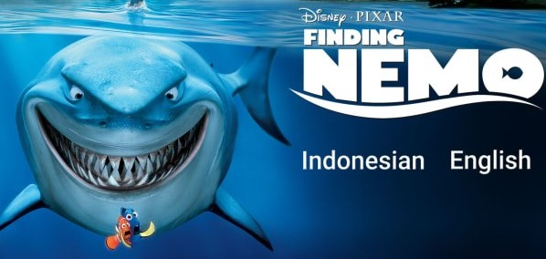

WㅤㅤㅤEㅤㅤㅤLㅤㅤㅤCㅤㅤㅤOㅤㅤㅤMㅤㅤㅤE |
|
FINDING NEMOFinding Nemo adalah sebuah film animasi grafik komputer buatan Amerika Serikat yang meraih penghargaan Academy Award.Pemain utamanya ialah Albert Brooks, Ellen DeGeneres, Alexander Gould, Willem Dafoe, dan masih banyak lagi. Sutradaranya ialah Andrew Stanton > Tanggal Lirisfilm ini dirilis pada tanggal 30 mei 2003 di kanada > KesuksesanFinding Nemo adalah Animasi tersukses kedua dari Pixar, dengan jumlah keuntungan dunia 866.592.978 dolar Amerika Serikat, di belakang Toy Story 3 yang berhasil mendapatkan pendapatan $1,000,519,000 Dollar Amerika Serikat. Berikut ini adalah daftar peringkat film animasi buatan Pixar berdasarkan keuntungan yang diraih : 1.toy story 3 (2010)ㅤㅤㅤ: $1,000,519,000  2.finding nemo (2003)ㅤㅤ: $866.592.978 3.up (2009)ㅤㅤㅤㅤㅤㅤ: $723.820.090 4.the incredibles (2005)ㅤ: $635.564.642 5.ratatouille (2007)ㅤㅤㅤ: $624.445.654 > SinopsisFilm Finding Nemo menceritakan tentang petualangan Marlin (yang diisi oleh Albert Brooks) mencari anaknya, Nemo (Alexander Gould).Marlin adalah seekor ikan badut yang sangat protektif terhadap anaknya karena putranya memiliki sirip cacat.Sirip Nemo cacat karena saat masih menjadi telur, sebuah kejadian mengerikan terjadi dan membunuh istri serta telur-telur Marlin lainnya.tersisa satu telur, namun telur tersebut mengalami sedikit kerusakan.Hingga kemudian, lahirlah Nemo yang memiliki satu sirip lebih kecil daripada sirip lainnya. Pada suatu hari, Nemo terpisah dari Marlin saat nekat berenang ke lautan lepas untuk menyentuh kapal. Tiba-tiba dua orang penyelam datang untuk mengambil Nemo yang akan digunakan sebagai ikan hias. Marlin pun mulai petualangan mencari Nemo dan menjelajahi lautan. Di tengah pencarian Nemo, ia bertemu dengan Dory (diisi oleh Ellen DeGeneres). Dory adalah ikan blue tang yang menderita penyakit ingatan jangka pendek sehingga membuatnya mudah lupa walaupun sebuah kejadian baru saja terjadi. Dory akhirnya mengikuti Marlin mencari Nemo karena ia tak tahu harus kemana. Marlin dan Dory menjelajahi lautan dan berpetualang hingga ke lautan Sydney, bertemu dengan banyak binatang laut lainnya. Termasuk di antaranya adalah segerombolan penyu dan kawanan hiu yang tak makan ikan. Nemo di tempat lain, terjebak di sebuah akuarium bersama dengan ikan-ikan hias lainnya di sebuah sudut ruangan dokter gigi. Nemo, dibantu dengan teman-temannya, berusaha kembali ke laut untuk bertemu kembali dengan ayahnya. > Referensi |
|
|
copyright © 2021.designed by gihonsinaga |
|